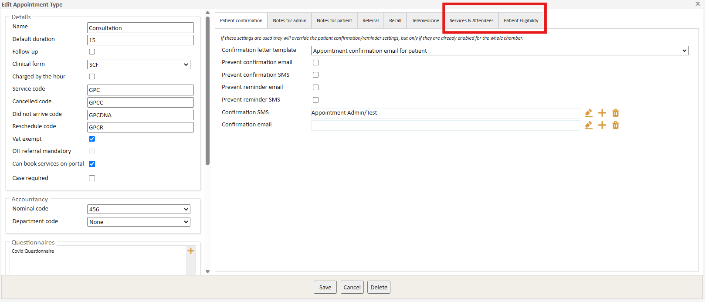
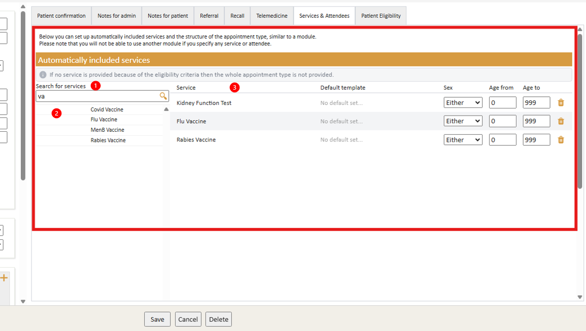
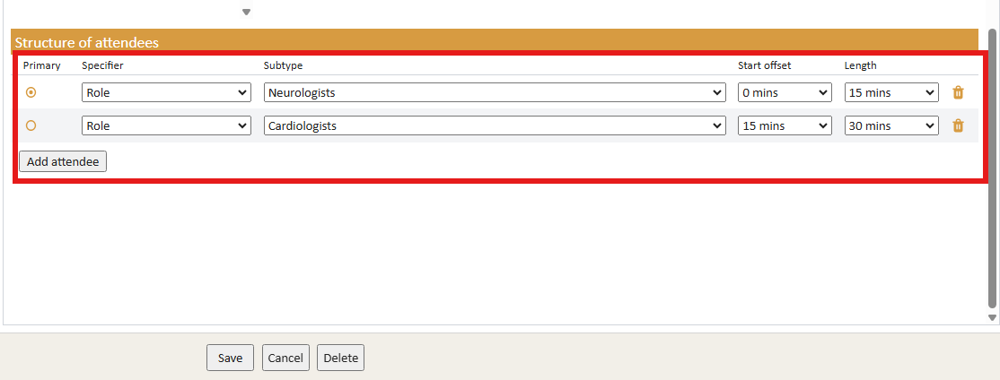
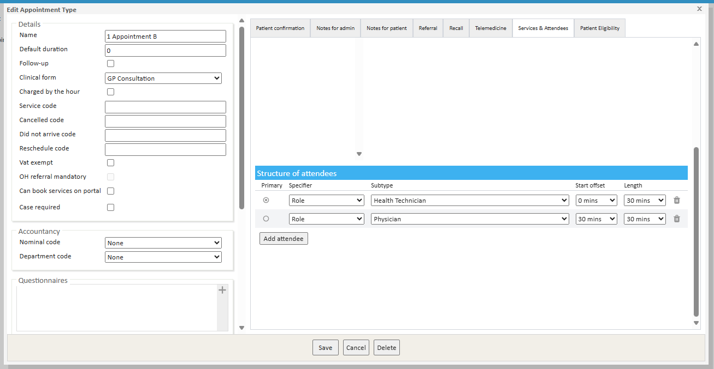
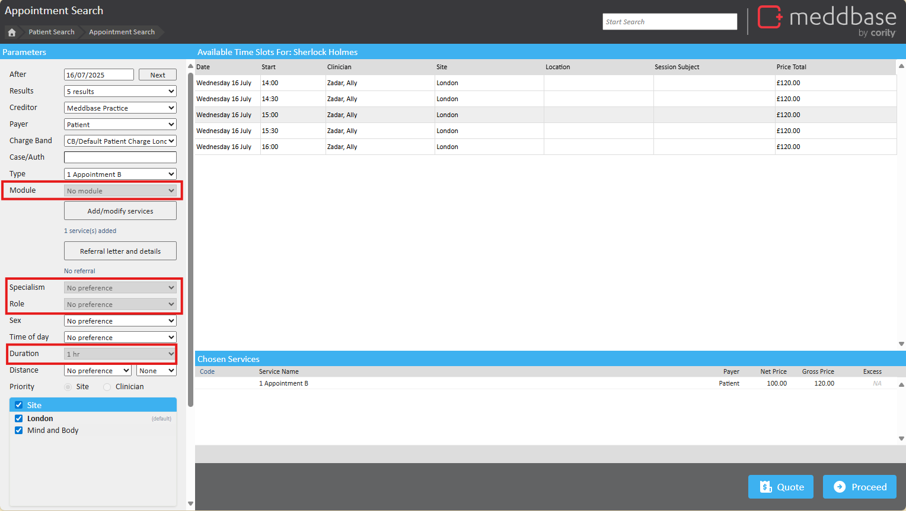
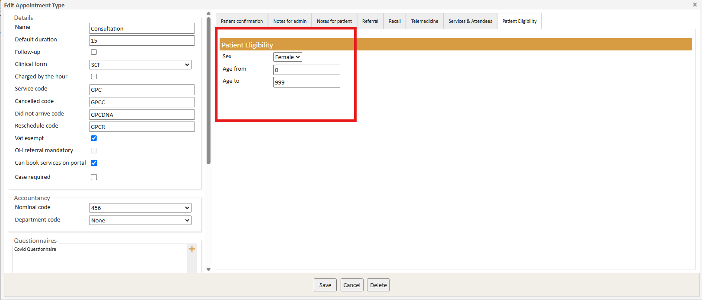

The Eligibility-based Appointment and Service Design functionality brings the flexibility of module-based service types directly into appointment type configuration. Previously, alength and content had to be managed by attaching modules to appointments. Now, this same functionality can be managed directly within the Appointment Type itself.
Appointment types are now have more configurable option son automatically included services, required attendees and patients' eligibility. With its adaptable features, Meddbase allows users to configure appointment types according to a patients sex or age as well as the ability to include specific services to be consumed within set appointment types.
This flexibility ensures that appointments are appropriate for each individual, streamlining administrative workflows and enhancing the overall patient experience by making sure that appointments are suited to the patient’s unique circumstances.
This article will guide you through the process of configuring new appointment settings in Appointment Admin, providing step-by-step instructions on how to customise your chamber to ensure appointments and services are tailored to each patient's eligibility. It will also explain how these settings affect the booking process.
If you would like this feature enabled in your chamber, please contact your account manager or raise a support ticket.
Navigate to Start Page > Admin > Appointment Admin and either 'Edit' an existing appointment type or create a 'New' appointment type.
The tabs 'Services & Attendees' and 'Patient Eligibility' will be available.
Once enabled, these tabs will be available for all appointment types.

The 'Services & Attendees' tab allows you to automatically add individual services and attendee specifications to the appointment type as required.
To add a service:

Once a service has been added to the appointment type, you will then be able to set the Patient Eligibility criteria for that particular service.
Where a patient doesn't meet the criteria of a given service, it is simply removed from the appointment and not provided in.
Appointment types which utilise Services and Structured attendees are not able to be associated with Modules. Therefore Module services cannot be added to the appointment type, therefore, none will be returned in the search bar.
Similarly to Modules, it is possible to add attendee specifications and multiple attendees to your appointment type.
The sum of the times stated here will be added to the overall ‘Default Duration’ set for the appointment type.

When an appointment type with Services & Attendees is configured, the booking must be facilitated through the Slot Finder.
The following configuration is an example appointment type for "1 Appointment B:

When booking an appointment using Slot Finder, you might notice that the following options are greyed out:
This is because the appointment type is acting as a module itself, rather than requiring an additional service to be selected as a module.
In this case:
Since all of this is pre-configured, the greyed-out options are no longer needed and cannot be changed.

When you select a slot and proceed to the booking confirmation page, you may notice that Meddbase has automatically selected a second attendee, based on the criteria set in the appointment type.
The option to add a module will be greyed out in the Slot Finder upon booking.
The 'Patient Eligibility' tab allows you to configure eligibility criteria in order for a patient to be booked in for this appointment type.
This feature is also available for individual service types and can be configured in the same way, under Admin> Service Management.

| Field Name | Notes |
|---|---|
| Sex |
Drop-down Values:
|
| Minimum Age |
|
| Maximum Age |
|
If a patient does not meet all of the eligibility criteria specified, this appointment will not be available if booking via the Slot Finder, or when booking through the Patient Portal.
Q: When the appointment type has associated services, is it expected behaviour that you only see a breakdown of those services within the consultation?
A: Yes. The breakdown of services is not visible during the booking process or on the appointment home page. It is shown in the Appt Activity log though as 'Add service' log for each service. But otherwise you would only see it within the Consultation. This behaves the same as current Modules where the Billing Type is set to 'bill as a Single service'. The individual services added to make it a module do not appear during booking or on invoices.
Q: The cost listed on the invoice is only the appointment type, it ignores the amount set in billing rules for those services?
A: Yes. The way these new appointment types with associated services work is the same as a Module service in Meddbase. Once the appointment type has associated services or attendee settings assigned the system considers it to be a 'Module' and therefore acts the same way. However the difference here in regards to billing is that it acts as Module as 'bill as a single service' only (whereas the module has a few billing setting types) and therefore only the appointment type is charged, like how only the module cost is charged unless the billing type is set to 'Bill as individual services' (where each service is charged on the invoice).
Q: Patient Eligibility Hierarchy: Which service takes precedent? If each service has patient eligibility criteria/split attendees, and then they're added to an appointment that also has its own patient eligibility/split attendees, which one is followed?
A: In terms of Patient Eligibility (PE) hierarchy, the appointment type PE overrides the service management PE settings. Within an appointment type where the appointment type PE and the added associated services is individually set to different PEs, all that is eligible will apply to the patient.